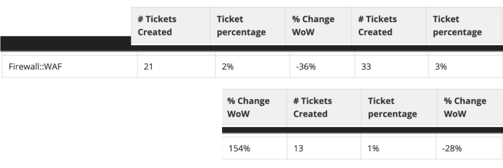

Cloudflare Firewall WAF rules
Self serve access to Firewall rule builder
I designed the first version of self-serve Web Application Firewall (WAF) rule builder. This is a feature that allows customers to customize rules for how they want their Cloudflare firewall to react to oncoming traffic.
Release date:
May 2019
My role:
User research
Product design
Team:
Alex C.F.(PM)
David K.(ENG lead)
Mark L.(ENG)
Andrew G.(EM)
01. Background
The existing way for customers to access Web Application Firewall rules was to request via support for Cloudflare team to create and adjust the rules for them. This was a lengthy process and required a lot of back and forth communication to fine tune rules.
One of the concerns on how to approach solving this was which customer base to focus on at first. We had 2 levels of customers who were either more beginner and would benefit from a WYSIWYG type interaction or the more experienced engineer who would like to have more precise control over how the rules would be created.
My aim was to explore designs that would allow customers to build rules in a way that they would be most comfortable with. That's not to say that advanced users might not benefit from templates or visual builders.
02. Research + Analysis
To get a better understanding of the challenges for building for the firewall app I needed to understand how the firewall app worked and what kind of jobs and goals did the customer have.
- Exploration of the Cloudflare Firewall
- Getting a sense of the customer via sales eng team and support team
- Doing a competitive anaysis on existing rule builders
03. Prototype + Lofi
Once I had a better understanding of how firewall worked and what was the range of actions customers would want. I set out to explore both visual rule builder and the code builder (Domain Specific Language or DSL).
- Figuring out the logic to construct rules
- Alternating between rule builder and DSL expression editor
- Prototyping rule builder interactions
04. Design + Testing
To ensure the user interface (UI) effectively addressed customer needs, I collaborated with engineers and the London-based engineering and sales team. Through paper prototyping sessions, we gained valuable insights into how both teams interpreted customer wants and translated them into actionable design decisions. This teamwork led to the development of several key UI components:
- Enhanced feedback mechanisms that provided users with clearer information on existing firewall rules and their effectiveness.
- A basic rule builder prototype that allowed users to switch between the visual interface and a dedicated Domain Specific Language (DSL) view. This addressed the needs of both technical and non-technical users.
05. Outcomes
The redesigned custom firewall experience yielded positive results, providing valuable insights for future iterations.
High User Engagement: Within the first 6 days of launch, nearly 4,000 users actively participated by creating a new custom rule. Over half (over 2,000 users) successfully completed the rule creation process, saving and deploying at least one rule. This suggests the core user experience resonated well with a significant portion of the user base.

Areas for Optimization: The 60% conversion rate for creating custom rules offers an opportunity to further improve the user experience. Analyzing user behavior can pinpoint specific areas where users might encounter friction, allowing for targeted improvements in subsequent follow up Firewall design.

Advanced User Success: For highly technical users, the new DSL expression editor proved valuable. While a smaller group (approximately 350 users) explored this advanced feature, a significant percentage (aproximately 200 users) successfully created and deployed custom rules using the editor.
Reduced Support Burden and User Empowerment: The impact of the redesigned custom firewall experience extended beyond user adoption. Support ticket data revealed a significant decrease in inquiries related to firewall rules.
- Initial Inquiry Spike: As expected, the launch week saw a temporary increase in support tickets (21 tickets), likely due to users familiarizing themselves with the new features. However, this initial rise was quickly followed by a substantial decrease.
- Sustainable Reduction: Just two weeks after launch, support tickets related to firewall rules dropped by 33% week-over-week (33 tickets). This downward trend continued, with a further 28% reduction the following week (13 tickets).
Sustainable Reduction: Just two weeks after launch, support tickets related to firewall rules dropped by 33% week-over-week (33 tickets). This downward trend continued, with a further 28% reduction the following week (13 tickets).
The redesigned custom firewall experience, proved to be a success. User engagement metrics, reduced support tickets,
and positive feedback all indicate a significant improvement for our customers. This project serves as a springboard
for continued innovation.
By prioritizing an intuitive user experience and empowering users with self-service
tools, we have empowered them to take control of their firewall security. Looking ahead, the Firewall team had plan to
leverage the learnings from this project to introduce even more advanced functionalities while ensuring a seamless
experience for all user levels.
This project wouldn't have been possible without the incredible collaboration and support from the London team. Huge thanks to Alex, Harley, Mark, Andrew, David, and everyone else who lent their expertise and insights throughout the process. It was a true pleasure working alongside such a talented group, and exploring London while collaborating on the firewall project made it an even more rewarding experience.